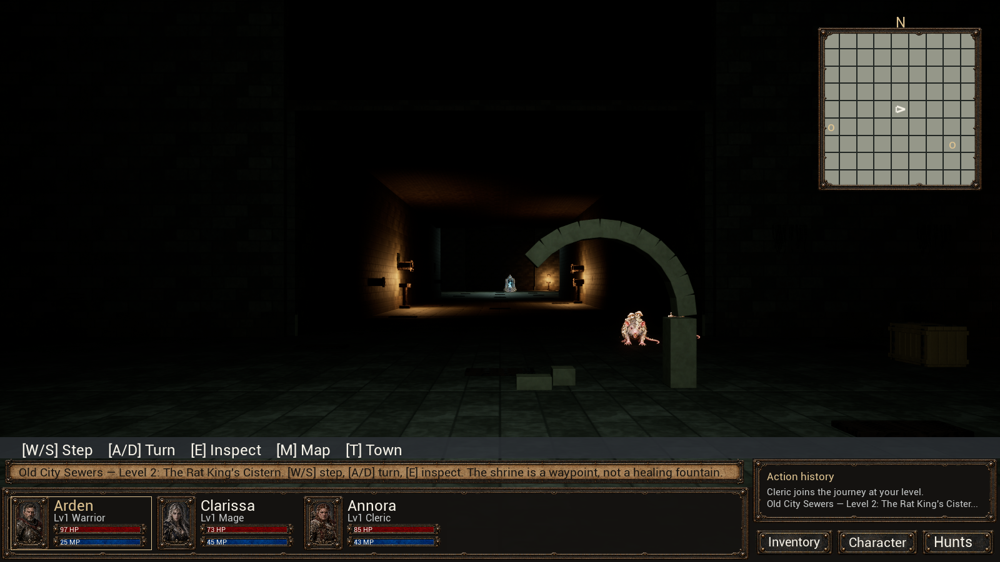
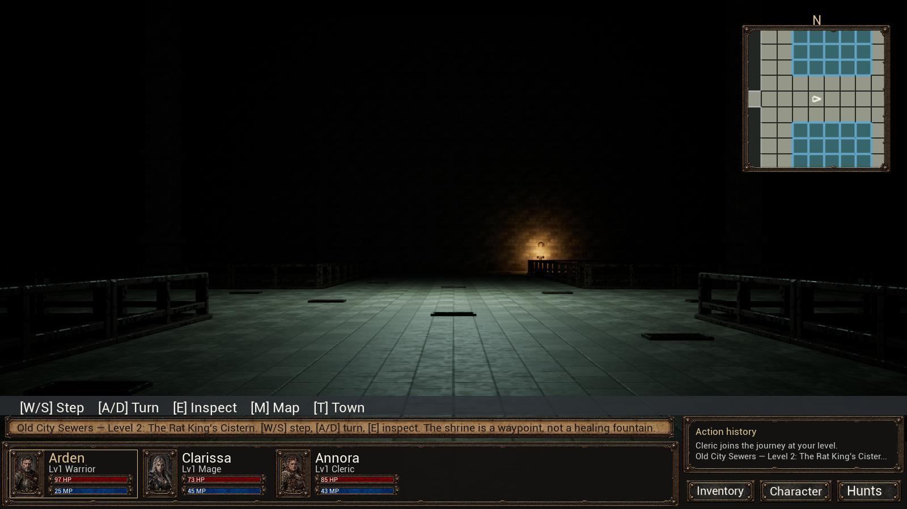
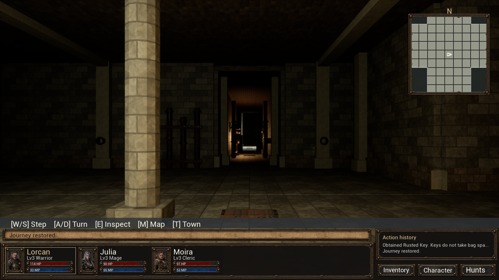

LONEMOORE · CISTERN PROTOTYPE · SEPTEMBER 17, 2026
A closer, warmer dungeon
The random miniature arches have been removed. Lower ceilings, full-height supports, masonry ribs and more storage and machinery give the chambers a stronger sense of structure. A warm, gently flickering player light makes nearby surfaces visible.
Lower ceilingsPlayer torch glowMore room furnishingsOriginal artwork retained
Launch Play Expanded Dungeon Prototype.cmd in the project folder and choose 1 — Continue. The changes apply to your existing prototype save. You do not need to start again.
The same chamber, before and after

Before: freestanding mini arch and dark, empty chamber Revised: full-height supports, ceiling ribs, shelving and pipework
Revised: full-height supports, ceiling ribs, shelving and pipeworkOriginal sewer surfaces and enemy artwork are retained. Enemy sprites in the dungeon dim with distance from the player light; combat portraits keep their existing presentation. Furnishings use the existing wood, stone and iron materials.
The reservoir

Before: tall, dark reservoir Revised: lower roof, structural beams and clearer bridge lighting
Revised: lower roof, structural beams and clearer bridge lightingPassages now have 5.6m ceilings, ordinary chambers 6–9.5m, and the large reservoir 14m. Room outlines, bridges, fog of war, enemy counts, locks and boss progression are unchanged.
The player light
The warm light and softer ambient fill follow your position and viewing direction. Distant spaces remain dark. These two views isolate the player light; wall and room lighting remain enabled in both.
Your continued save
The packaged review loaded the existing prototype autosave with saving disabled. Its stored floor plan was retained exactly.

Existing prototype save, with the revised atmosphere
Validation
The revised game passed all 15 regression suites and 4,826 physical boundary checks. The packaged review checked the key gate, boss seal, player light and continued save. Source art, existing saves and display settings were checked for preservation.
Validation details · Play instructions · Floor plans and original expansion overview
Before/after views use the same seed and camera positions. Screenshots come from the packaged game with save writes disabled. These checks establish functionality; the atmosphere and exploration pace remain for your playtest.